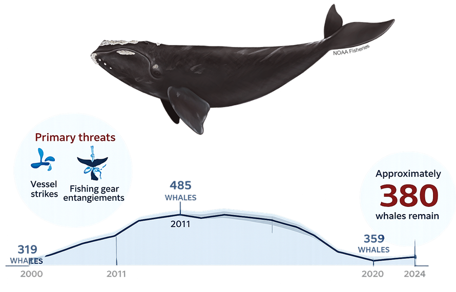

North Atlantic Right Whale Population And Spatial Dynamics
This project develops a state-space assessment model to estimate right whale population dynamics through time and an agent-based model to explore movement, migration, and spatial dynamics.